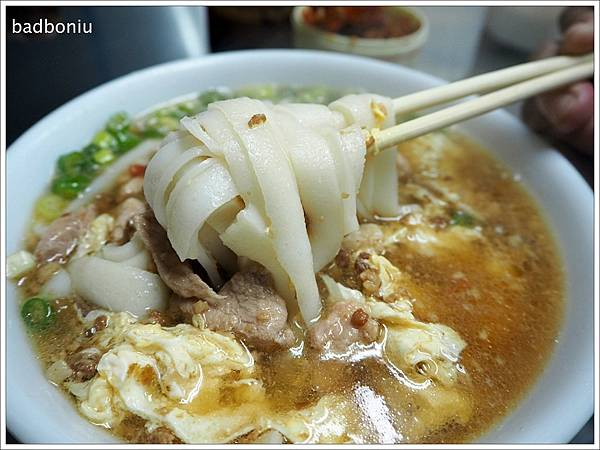
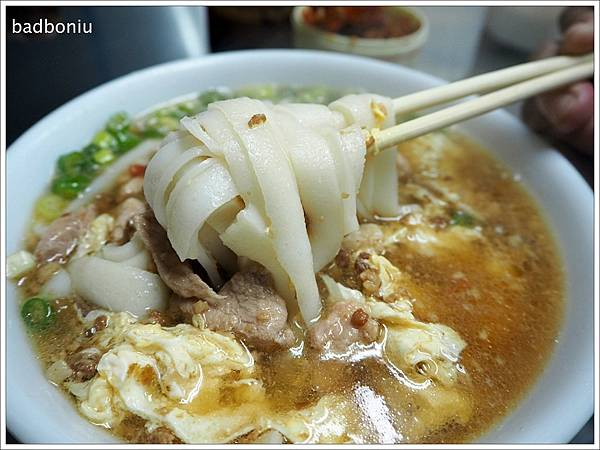

米干介紹
米干是一種以米為原料製成的麵條，起源於雲南。製作米干時，會將米浸泡後磨成米漿，再將米漿攤在蒸籠上蒸熟，最後切成條狀。米干口感軟嫩滑順，可以搭配各種湯底和配料食用。
米干是一種以米為原料製成的麵條，起源於雲南。製作米干時，會將米浸泡後磨成米漿，再將米漿攤在蒸籠上蒸熟，最後切成條狀。米干口感軟嫩滑順，可以搭配各種湯底和配料食用。
米干起源於雲南省，是一種用米製成的麵條。相傳在明朝永曆年間，雲南軍隊在與緬甸軍隊作戰時，糧食短缺，於是將大米磨成粉，蒸熟後切成條狀，煮食後發現味道鮮美，於是米干便流傳開來。&oq=米干起源於雲南省，是一種用米製成的麵條。相傳在明朝永曆年間，雲南軍隊在與緬甸軍隊作戰時，糧食短缺，於是將大米磨成粉，蒸熟後切成條狀，煮食後發現味道鮮美，於是米干便流傳開來。
1954年底忠貞新村建成，每戶眷舍只有約4坪的空間，雖然全家只有一張床，但對顛沛流離的孤軍來說，安定的生活就是天堂。為了在新家園紮根，眷屬們捲起袖子、搬出拿手菜，背著娃娃做起生意。孤軍大部份為雲南人，眷屬則包含雲南各少數民族和緬、泰等民族，歷經戰亂和飄流，雖然吃盡苦頭，但也豐富了他們的生命，這群人將自己的人生故事融進了味道裏，讓龍岡地 區成了異域和異族飲食文化融合的大廚房。一甲子過去了，許多長輩雖已凋零，但新一代的雲南人仍堅守著上一代的味道，並加以改良、升級、調整，呈現更精緻、更多元的新雲南味。